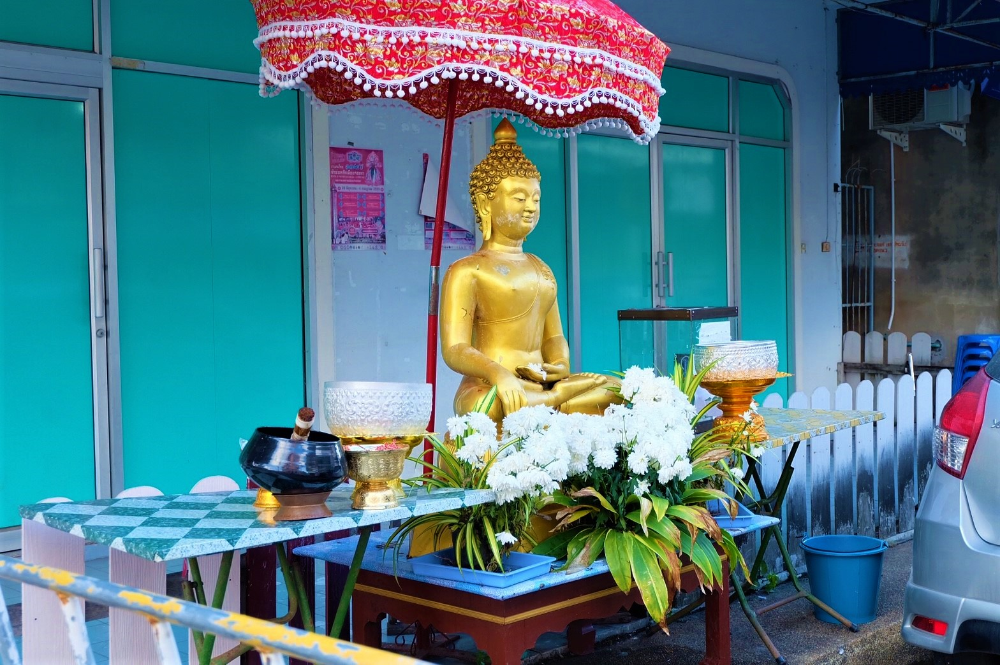
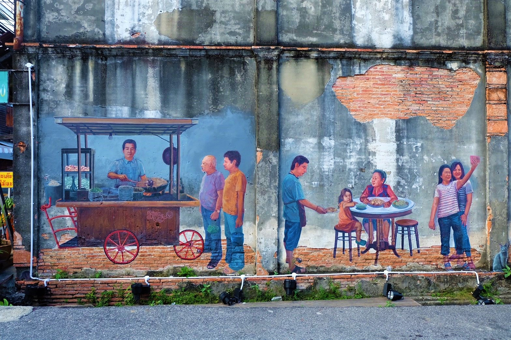
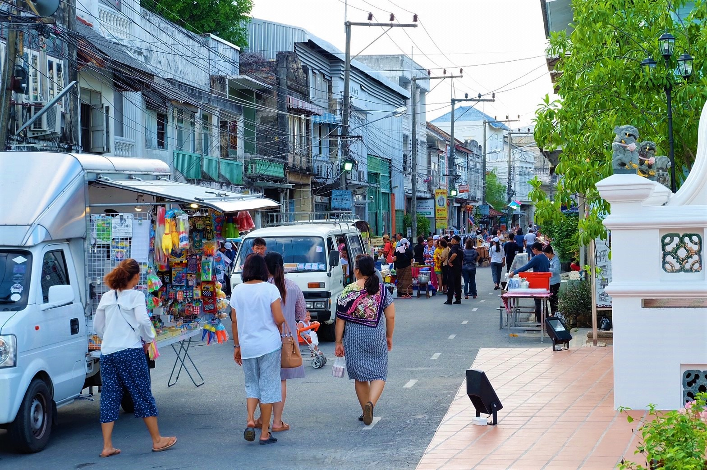
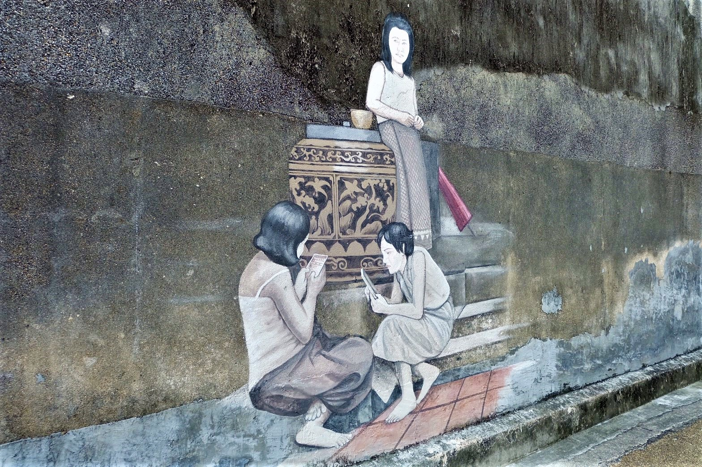
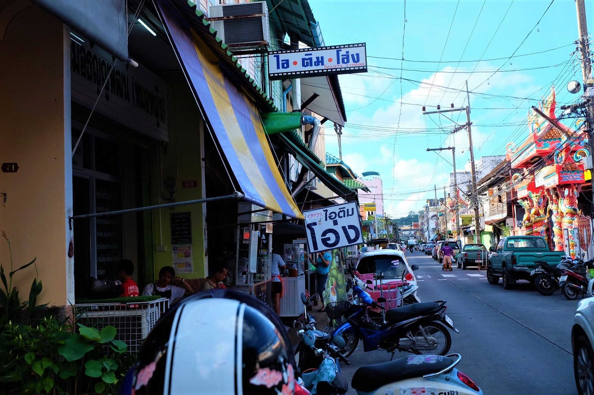
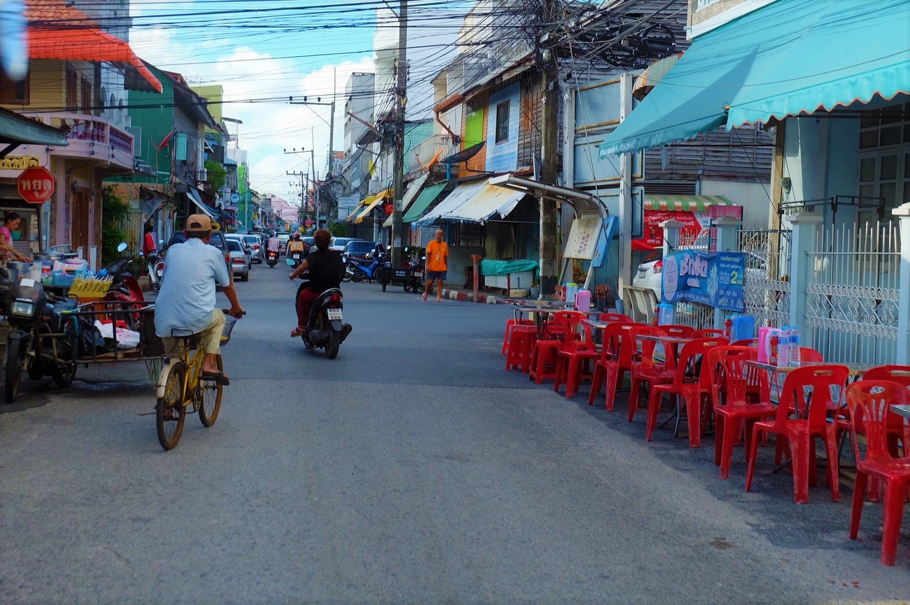

ถนนนางงาม
ประวัติความเป็นมา
ถนนนางงามเป็นถนนสายเก่าแก่ของ จ.สงขลา มีประวัติยาวนานกว่าร้อยปี แต่เดิมเรียกว่า “ถนนเก้าห้อง” เนื่องจากเริ่มแรกมีอาคารบนถนนสายนี้เพียง 9 คูหา หรือ 9 ห้อง และในปี พ.ศ.2478 จังหวัดสงขลา ได้จัดงานปีใหม่พร้อมกับจัดประกวดนางงามสงขลาขึ้น นางงามที่ชนะและได้เป็น “นางงามสงขลาคนแรก” นั้นก็อาศัยอยู่ ณ “ถนนเก้าห้อง” นับแต่นั้นมาคนสงขลาจึงเรียกถนนเส้นนี้ว่า “ถนนนางงาม” อาคารบ้านเรือนบนสองฝากฝั่งถนนสายนี้ส่วนใหญ่เป็นจะห้องแถวไม้อายุนับร้อยกว่าปีสุดคลาสสิค เป็นการผสมผสานกันระหว่างสถาปัตยกรรมจีนฮกเกี้ยนและชิโนโปรตุกีส (อารมณ์คล้ายๆกับย่านเมืองเก่าจ.ภูเก็ต) นอกจากบ้านเรือนที่สวยงามที่ควรค่าแก่การมาเดินชมแล้ว อีกหนึ่งไฮไลท์ที่ขึ้นชื่อก็คือ ร้านอาหาร ที่มีให้เลือกชิมมากมายกว่า 30 ร้าน หลายๆร้านเป็นร้านเก่าแก่อายุใกล้ 100 ปี มีให้เลือกชิมทั้งของคาวและของหวาน
ที่มา : http://blog.reviewthailand.net/ชิมร้านอร่อย-ถนนนางงาม-สงขลา
ความประทับใจ
รายละเอียด
Bread Basket
Assortment of fresh baked fruit breads and muffins 5.50
Honey Almond Granola with Fruits
Natural cereal of honey toasted oats, raisins, almonds and dates 7.00
Belgian Waffle
Vanilla flavored batter with malted flour 7.50
Scrambled eggs
Scrambled eggs, roasted red pepper and garlic, with green onions 7.50
Blueberry Pancakes
With syrup, butter and lots of berries 8.50


ภาพบรรยากาศ
     